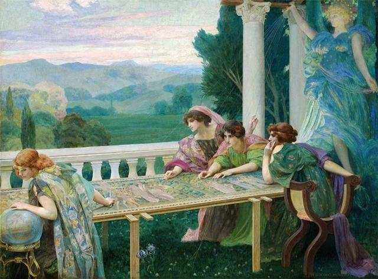

24 April 2024
the end

dear you,
something is ending soon. a chapter is closing, the credits are rolling. i find inevitability’s hands around my throat, the silent herald of the impending conclusion. i know i can no longer delay the feeling – there is no refuge in denial. it has waited a long time for me, i have avoided it’s every advance. but without it, what am i? it’s as though i crave the shadow in the corner of my eye, the familiarity of fate. i cannot change what is to come just as inevitability cannot change its course. for too long have i danced around its impeding advances. and now, it reaches me with a satisfactory glance.
we are all in the palm of fate, resigned to move headfast into what is already prepared for us: its presence is an immutable constant. while i watch the uncertainty play out before me, there is nothing more i can do but embrace it. each moment that passes draws me closer to the edge of change, where the line between what was and what will be blurs into obscurity. what more can i do? in my moment of surrender, there is a sense of familiarity: i have changed before, i can change again. though my next steps will be blind, i know that fate is holding my hand.
love, kate
(artwork: destiny by henry siddons mowbray)